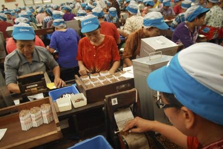

SELAMAT DATANG di PT GUDANG GARAM Tbk
BUMN
home-
profile-
contact-
image-
table-
Contoh Gambar Sejajar
Gambar Kantor beserta Lokasi Operasional Pusat & Salah Satu Kantor Cabang PT.Gudang Garam beerta Lokasi Operasional nya


4 Gambar diatas merupakan foto pabrik Gudang Garam yang terletak di Kediri, salah satu cabang dari PT gudang garam yang terletak di kota Surabaya, dan juga foto bagaimana para pegawai kami yang bekerja secara totalitas dan dengan ketekunan nya.
Para pegawai kami juga tentunya bertanggung jawab atas penerimaan, penyimpanan, dan distribusi bahan baku seperti tembakau dan cengkeh serta memastikan ketersediaan bahan baku untuk proses prodksi.
Kiprah PT. Gudang Garam TBK. senantiasa ditandai dengan kerja keras, komitmen, inovasi, serta pencapaian yang membanggakan
copyright by©admin